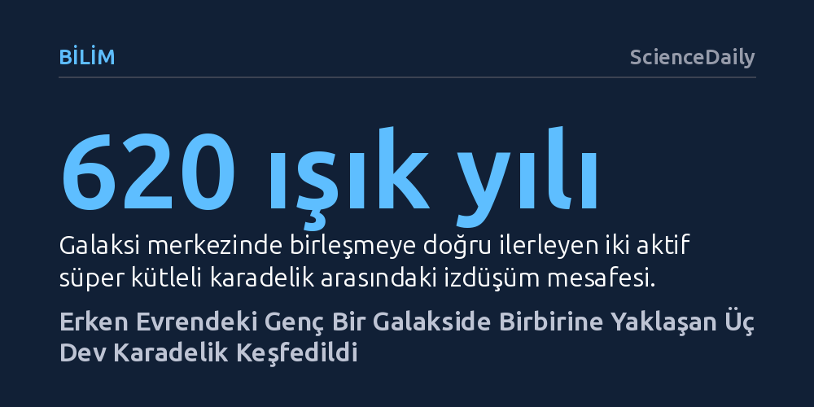

BILIM · ScienceDaily · 2026-10-26
Gökbilimciler, James Webb Uzay Teleskobu'yla 12,5 milyar ışık yılı uzaklıktaki genç bir galakside eş zamanlı beslenen üç süper kütleli karadelik keşfetti. Merkezde hızla birleşmeye yaklaşan bu devler, erken evrende karadeliklerin kuramların öngördüğünden çok daha hızlı nasıl büyüdüğünü açıklıyor.
Erken evrendeki dev karadeliklerin yalnızca kademeli gaz yutarak değil, galaksi birleşmeleri ve kuramsal sınırları aşan olağanüstü bir beslenme hızıyla kısa sürede oluştuklarını kanıtlıyor.

Gökbilimciler, evrenin henüz 1,2 milyar yaşında olduğu erken bir kozmik döneme ait J0148-4214 adlı genç galakside daha önce benzeri görülmemiş bir manzarayla karşılaştı. Işığı Dünya'ya yaklaşık 12,5 milyar yılda ulaşan bu uzak sistemde, birbirine çok yakın konumlanmış ve çevrelerindeki gaz disklerini hararetle yutan tam üç adet süper kütleli karadelik saptandı. Galaksinin kızılötesi tayfındaki z=5,02'lik kırmızıya kayma değeri, bu sahnenin Büyük Patlama'dan kısa bir süre sonraki kozmik şafak dönemine ait olduğunu net biçimde ortaya koyuyor.
Keşfedilen üç karadeliğin kütleleri birbirinden oldukça farklı. En ağırı Güneş'in yaklaşık 80 milyon katı kütleye sahip devasa bir yapıdayken, diğer ikisi sırasıyla yaklaşık 2 milyon ve 600 bin Güneş kütlesinde ölçüldü. Bu üç karadelik, toplam yıldız kütlesi yaklaşık 1,3 milyar Güneş kütlesi olarak hesaplanan genç galaksinin toplam kütle bütçesinde şaşırtıcı derecede baskın bir paya sahip.
Bu üç karadeliği birbirinden bağımsız olarak tespit etmek geleneksel optik yöntemlerle imkânsızdı. Karadeliklerin kendisi ışık yaymadığı için araştırmacılar, çevrelerindeki olağanüstü kütleçekim kuvvetiyle savrulan hidrojen gazının tayfsal hareketlerini mercek altına aldı. Galaksinin merkezinden gelen ışıkta son derece karmaşık bir hidrojen salım deseni yakalandı; bu karmaşa tek bir kaynağın değil, birbirine komşu birden fazla canavarın varlığına işaret ediyordu.
Uluslararası araştırma ekibi, James Webb Uzay Teleskobu'nun integral alan spektrografı (NIRSpec-IFS) ve 'spektro-astrometri' adı verilen ileri bir analiz yöntemi sayesinde bu karmaşık ışık demetini çözmeyi başardı. Teleskobun optik sınırları bu kaynakları doğrudan iki ayrı ışık noktası halinde ayıramasa da tayf çizgilerinin mikroskobik konumsal kaymaları takip edilerek merkezdeki iki karadeliğin birbirinden yalnızca 620 ışık yılı mesafede olduğu kanıtlandı. Merkezden 5.500 ışık yılı uzakta yer alan üçüncü aktif karadelik ise bu uzamsal haritalama sayesinde net olarak teşhis edildi.
Gözlemlerdeki en çarpıcı sürprizlerden biri karadeliklerin beslenme hızlarında ortaya çıktı. Mantıken 80 milyon Güneş kütlesindeki en büyük karadeliğin en çok maddeyi yutması beklenirken, tam aksine 600 bin Güneş kütlesine sahip en küçük karadeliğin çok daha agresif bir biçimde büyüdüğü görüldü. Bu küçük komşu, çevresindeki gazı astrofizikte 'Eddington sınırı' olarak bilinen kuramsal azami beslenme hızından bile daha süratli bir tempoyla tüketiyordu.
Eddington sınırı, bir gökcisminin içeri çeken kütleçekim kuvveti ile dışarı iten radyasyon basıncının dengelendiği teorik tavanı temsil eder. Bir karadeliğin bu sınırı aşarak beslenmesi, evrenin doğumundan bu yana geçen kısa sürede devasa süper kütleli karadeliklerin nasıl bu kadar hızlı var olabildiği sorusuna kritik bir yanıt sunuyor. Görünen o ki genç evrendeki karadelikler standart kuralları esneterek olağanüstü bir büyüme sıçraması gerçekleştirebiliyor.
Galaksinin kalbinde yalnızca 620 ışık yılı mesafeyle dönen iki merkezi karadeliğin önümüzdeki birkaç yüz milyon yıl içinde birbiriyle birleşmesi kaçınılmaz görünüyor. MPE araştırma grubu lideri Hannah Übler'in belirttiği gibi, "Bu, uzak evrendeki tek bir galakside üç aktif karadeliğe dair ilk kanıt." Bu birleşme süreci, erken evrende galaksilerin sık sık çarpışarak çekirdeklerindeki devleri kaynaştırdığı ve geleceğin süper kütleli canavarlarını hızla inşa ettiği tezini doğrudan doğruluyor.
Sistemin 5.500 ışık yılı uzağında tek başına dolaşan üçüncü karadelik ise bir başka kozmik gizemi barındırıyor. Bilim insanlarına göre bu nesne, ya geçmişte gerçekleşen bir başka karadelik birleşmesinde uzaya yayılan dengesiz kütleçekim dalgalarının uyguladığı 'yerçekimsel geri tepme' nedeniyle galaksi dışına fırlatılmış bir kalıntı ya da zamanla merkeze doğru süzülerek diğer ikisiyle nihai bir birleşme sürecine girecek olan yeni bir yolcu. Her iki senaryo da erken evrenin ne kadar dinamik ve şiddetli bir birleşme laboratuvarı olduğunu gözler önüne seriyor.